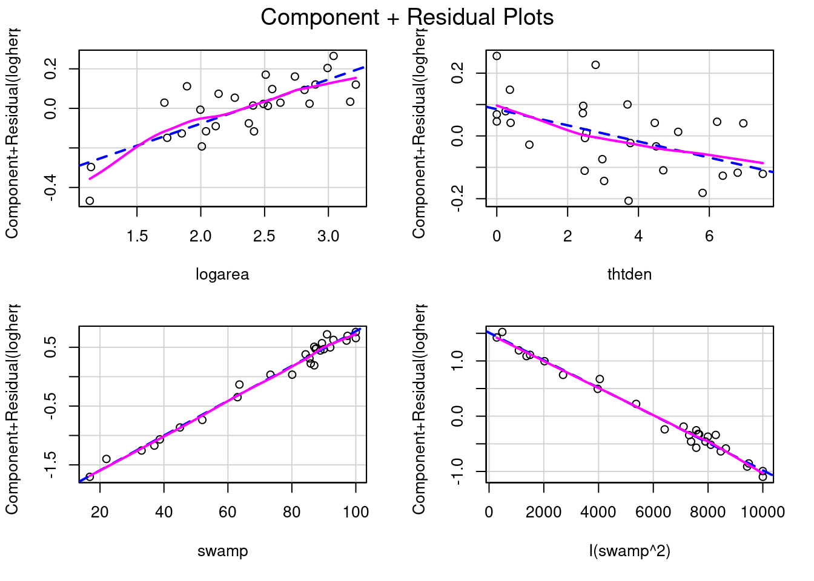
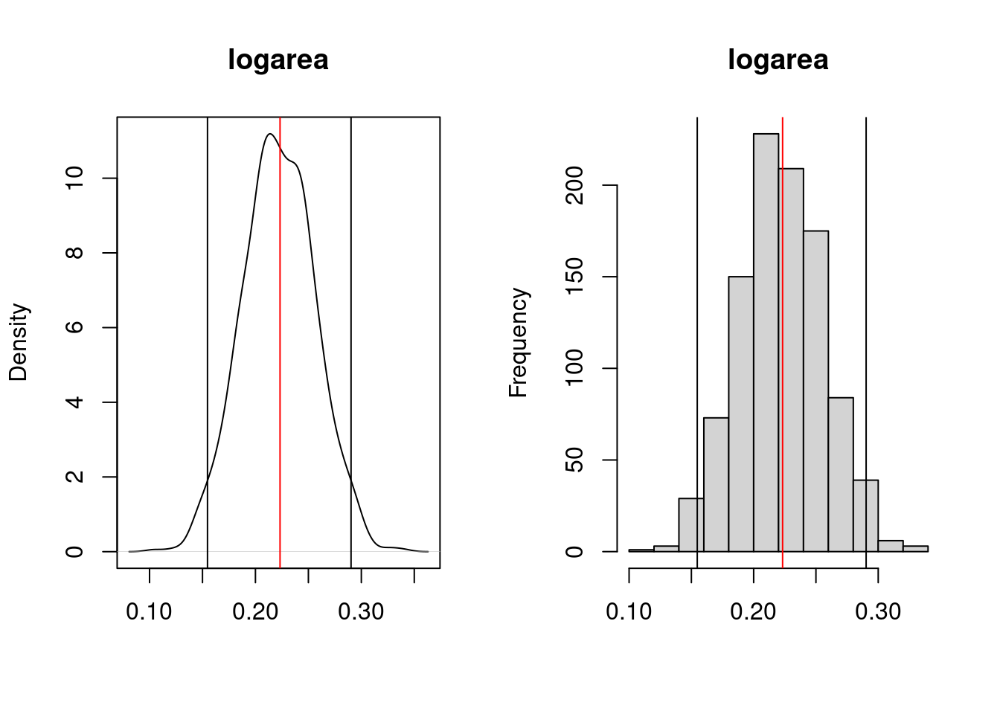
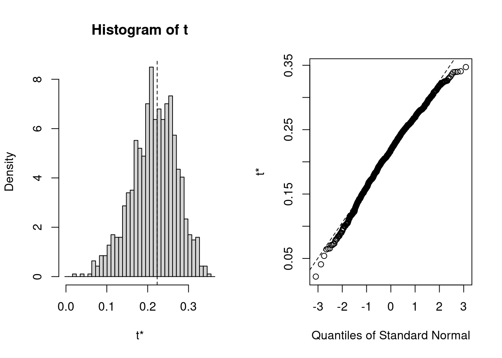

mydata <- read.csv("data/Mregdat.csv")
scatterplotMatrix(
~ logherp + logarea + cpfor2 + thtden + swamp,
regLine = TRUE, smooth = TRUE, diagonal = TRUE,
data = mydata
)13 Régression multiple
Après avoir complété cet exercice de laboratoire, vous devriez pouvoir :
- Utiliser R pour ajuster une régression multiple et comparer des modèles selon l’approche inférentielle et celle de la théorie de l’information
- Utiliser R pour éprouver des hypothèses sur l’effet des variables indépendantes sur la variable dépendante.
- Utiliser R pour évaluer la multicolinéarité entre les variables indépendantes et en évaluer ses effets
- Utiliser R pour effectuer une régression curvilinéaire (polynomiale).
Avertissement
Je ne supporte pas absolument pas l’approche stepwise (ni par AIC ni par P). Je déteste l’approche par la fonction dredge() qui selon moi va à l’encontre de la philosophie des AIC et de la parsimonie. L’approche stepwise ne devrait plus être utilisé. Ce chapitre est en grand besoin d’une réécriture. Je soutiens de développer un modèle complet basé sur des hypothèses biologiques et de reporter ce modèle avec tous les effets significatifs ou non.
13.1 Paquets et données requises pour le labo
Ce laboratoire nécessite:
- les paquets R:
- ggplot2
- car
- lmtest
- simpleboot
- boot
- MuMIn
- les fichiers de données
- Mregdat.csv
13.2 Conseils généraux
Les variables qui intéressent les biologistes sont généralement influencées par plusieurs facteurs, et une description exacte ou une prédiction de la variable dépendante requiert que plus d’une variable soit incluse dans le modèle. La régression multiple permet de quantifier l’effet de plusieurs variables continues sur la variable dépendante.
Il est important de réaliser que la maîtrise de la régression multiple ne s’acquiert pas instantanément. Les débutants doivent garder à l’esprit plusieurs points importants :
- Un modèle de régression multiple peut être hautement significatif même si aucun des termes pris isolément ne l’est (ceci est causé par la multicolinéarité),
- Un modèle peut ne pas être significatif alors que l’un ou plusieurs des termes le sont (ceci est un signe d’un modèle trop complexe (“overfitting”)) et,
- À moins que les variables indépendantes soient parfaitement orthogonales (c’est-à-dire qu’il n’y ait aucune corrélation entre elles et donc pas de multicolinéarité) les diverses approches de sélection des variables indépendantes peuvent mener à des modèles différents.
13.3 Premières régressions multiples
Le fichier Mregdat.csv contient des données de richesse spécifique de quatre groupes d’organismes dans 30 marais de la région Ottawa-Cornwall-Kingston. Les variables sont:
- la richesse spécifique:
- des oiseaux (bird, et son logarithme base 10 logbird)
- des mammifères (mammal, logmam)
- des amphibiens et reptiles (herptile, logherp)
- des vertébrés (totsp, logtot)
- les coordonnées des sites (lat, long)
- la superficie du marais (logarea)
- le pourcentage du marais inondé toute l’année (swamp)
- le pourcentage des terres couvertes par des forêts dans un rayon de 1km du marais (cpfor2)
- la densité des routes pavées (en m/ha) dans un rayon de 1km du marais (thtden).
Nous allons nous concentrer sur les amphibiens et les reptiles (herptile) pour cet exemple, il est donc avisé d’examiner la distribution de cette variable et les corrélations avec les variables indépendantes potentielles:
- En utilisant les données de ce fichier, faites la régression simple de
logherpen fonction delogarea. Que concluez-vous à partir de cette analyse?
Call:
lm(formula = logherp ~ logarea, data = mydata)
Residuals:
Min 1Q Median 3Q Max
-0.38082 -0.09265 0.00763 0.10409 0.46977
Coefficients:
Estimate Std. Error t value Pr(>|t|)
(Intercept) 0.18503 0.15725 1.177 0.249996
logarea 0.24736 0.06536 3.784 0.000818 ***
---
Signif. codes: 0 '***' 0.001 '**' 0.01 '*' 0.05 '.' 0.1 ' ' 1
Residual standard error: 0.1856 on 26 degrees of freedom
(2 observations deleted due to missingness)
Multiple R-squared: 0.3552, Adjusted R-squared: 0.3304
F-statistic: 14.32 on 1 and 26 DF, p-value: 0.0008185Il semble donc y avoir une relation positive entre la richesse spécifique des reptiles et des amphibiens et la surface des marais. La régression n’explique cependant qu’environ le tiers de la variabilité (R 2 =0.355). L’analyse des résidus indique qu’il n’y a pas de problème avec la normalité, l’homoscédasticité, ni l’indépendance.
- Faites ensuite la régression de
logherpen fonction decpfor2. Que concluez-vous?
Solution
Call:
lm(formula = logherp ~ cpfor2, data = mydata)
Residuals:
Min 1Q Median 3Q Max
-0.49095 -0.10266 0.05881 0.16027 0.25159
Coefficients:
Estimate Std. Error t value Pr(>|t|)
(Intercept) 0.609197 0.104233 5.845 3.68e-06 ***
cpfor2 0.002706 0.001658 1.632 0.115
---
Signif. codes: 0 '***' 0.001 '**' 0.01 '*' 0.05 '.' 0.1 ' ' 1
Residual standard error: 0.2202 on 26 degrees of freedom
(2 observations deleted due to missingness)
Multiple R-squared: 0.09289, Adjusted R-squared: 0.058
F-statistic: 2.662 on 1 and 26 DF, p-value: 0.1148Ici, on doit accepter l’hypothèse nulle et conclure qu’il n’y a pas de relation entre la richesse spécifique dans les marais (logherp) et la proportion de forêts sur les terres adjacentes (cpfor2). Qu’est-ce qui arrive quand on fait une régression avec les 2 variables indépendantes?
- Refaites la régression de logherp enfonction de logarea et cpfor2 à la fois. Que concluez-vous?
Solution
Call:
lm(formula = logherp ~ logarea + cpfor2, data = mydata)
Residuals:
Min 1Q Median 3Q Max
-0.40438 -0.11512 0.01774 0.08187 0.36179
Coefficients:
Estimate Std. Error t value Pr(>|t|)
(Intercept) 0.027058 0.166749 0.162 0.872398
logarea 0.247789 0.061603 4.022 0.000468 ***
cpfor2 0.002724 0.001318 2.067 0.049232 *
---
Signif. codes: 0 '***' 0.001 '**' 0.01 '*' 0.05 '.' 0.1 ' ' 1
Residual standard error: 0.175 on 25 degrees of freedom
(2 observations deleted due to missingness)
Multiple R-squared: 0.4493, Adjusted R-squared: 0.4052
F-statistic: 10.2 on 2 and 25 DF, p-value: 0.0005774On voit donc qu’on peut rejeter les 2 hypothèses nulles que la pente de la régression de logherp sur logarea est zéro et que la pente de la régression de logherp sur cpfor2 est zéro. Pourquoi cpfor2 devient-il un facteur significatif dans la régression multiple alors qu’il n’est pas significatif dans la régression simple? Parce qu’il est parfois nécessaire de contrôler pour l’effet d’une variable pour pouvoir détecter les effets plus subtils d’autres variables. Ici, il y a une relation significative entre logherp et logarea qui masque l’effet de cpfor2 sur logherp . Lorsque le modèle tient compte des deux variables explicatives, il devient possible de détecter l’effet de cpfor2 .
- Ajustez un autre modèle, cette fois en remplaçant
cpfor2parthtden(logherp ~ logarea + thtden). Que concluez-vous?
Solution
Call:
lm(formula = logherp ~ logarea + thtden, data = mydata)
Residuals:
Min 1Q Median 3Q Max
-0.31583 -0.12326 0.02095 0.13201 0.31674
Coefficients:
Estimate Std. Error t value Pr(>|t|)
(Intercept) 0.37634 0.14926 2.521 0.018437 *
logarea 0.22504 0.05701 3.947 0.000567 ***
thtden -0.04196 0.01345 -3.118 0.004535 **
---
Signif. codes: 0 '***' 0.001 '**' 0.01 '*' 0.05 '.' 0.1 ' ' 1
Residual standard error: 0.1606 on 25 degrees of freedom
(2 observations deleted due to missingness)
Multiple R-squared: 0.5358, Adjusted R-squared: 0.4986
F-statistic: 14.43 on 2 and 25 DF, p-value: 6.829e-05On rejette donc l’hypothèse nulle que la richesse spécifique n’est pas influencée par la taille des marais (logarea) ni par la densité des routes (thtden). Notez qu’ici il y a une relation négative significative entre la richesse spécifique des amphibiens et reptiles et la densité des routes sur les terres adjacentes, tandis que la relation est positive pour la taille des marais et pour la densité des forêts (cpfor2 ; résultat de la dernière régression).
Le \(R^2\) de ce modèle est plus élevé que pour le précédent, reflétant une corrélation plus forte entre logherp et thtden qu’entre logherp et cpfor2 .
La richesse spécifique des reptiles et amphibiens semble donc reliée à la surface de marais (logarea), la densité des routes (thtden), et possiblement au couvert forestier sur les terres adjacentes aux marais (cpfor2). Cependant, les trois variables ne sont peut-être pas nécessaires dans un modèle prédictif. Si deux des trois variables (disons cpfor2 et thtden) sont parfaitement corrélées, alors l’effet de thtden ne serait rien de plus que celui de cpfor2 (et vice-versa) et un modèle incluant l’une des deux variables ferait des prédictions identiques à un modèle incluant ces deux variables (en plus de logarea).
- Estimez un modèle de régression avec
logherpcomme variable dépendante etlogarea,cpfor2etthtdencomme variables indépendantes. Que concluez-vous?
Solution
Call:
lm(formula = logherp ~ logarea + cpfor2 + thtden, data = mydata)
Residuals:
Min 1Q Median 3Q Max
-0.30729 -0.13779 0.02627 0.11441 0.29582
Coefficients:
Estimate Std. Error t value Pr(>|t|)
(Intercept) 0.284765 0.191420 1.488 0.149867
logarea 0.228490 0.057647 3.964 0.000578 ***
cpfor2 0.001095 0.001414 0.774 0.446516
thtden -0.035794 0.015726 -2.276 0.032055 *
---
Signif. codes: 0 '***' 0.001 '**' 0.01 '*' 0.05 '.' 0.1 ' ' 1
Residual standard error: 0.1619 on 24 degrees of freedom
(2 observations deleted due to missingness)
Multiple R-squared: 0.5471, Adjusted R-squared: 0.4904
F-statistic: 9.662 on 3 and 24 DF, p-value: 0.0002291Plusieurs choses sont à noter ici: 1. Tel que prédit, le coefficient de régression pour cpfor2 n’est plus significativement différent de 0. Une fois que la variabilité attribuable à logarea et thtden est enlevée, il ne reste qu’une fraction nonsignificative de la variabilité attribuable à cpfor2 . 2. Le \(R^2\) pour ce modèle(0.547) n’est que légèrement supérieur au \(R^2\) du modèle avec seulement logarea et thtden (.536), ce qui confirme que cpfor2 n’explique pas grand-chose de plus.
Notez aussi que même si le coefficient de régression pour thtden n’a pas beaucoup changé par rapport à ce qui avait été estimé lorsque seul thtden et logarea étaient dans le modèle (0-.036 vs -0.042), l’erreur type pour l’estimé du coefficient est plus grand, et ce modèle plus complexe mène à un estimé moins précis. Si la corrélation entre thtden et cpfor2 était plus forte, la décroissance de la précision serait encore plus grande.
On peut comparer les deux derniers modèles (i.e., le modèle incluant les 3 variables et celui avec seulement logarea and thtden) pour décider lequel privilégier.
anova(model.mtri, model.mden)Analysis of Variance Table
Model 1: logherp ~ logarea + cpfor2 + thtden
Model 2: logherp ~ logarea + thtden
Res.Df RSS Df Sum of Sq F Pr(>F)
1 24 0.62937
2 25 0.64508 -1 -0.015708 0.599 0.4465Cette comparaison révèle que le modèle à 3 variables ne fait pas de prédictions significativement meilleures que le modèle avec seulement Logarea et thtden . Ce résultat n’est pas surprenant puisque le test de signification pour cpfor2 dans le modèle complet indique qu’il faut accepter l’hypothèse nulle.
À la suite de cette analyse, on doit conclure que:
- Le meilleur modèle est celui incluant thtden et logarea .
- Il y a une relation négative entre la richesse spécifique des amphibiens et reptiles et la densité des routes sur les terres adjacentes.
- Il y a une relation positive entre la richesse spécifique et la taille des marais.
Notez que le “meilleur” modèle n’est pas nécessairement le modèle parfait, seulement le meilleur n’utilisant que ces trois variables indépendantes. Il est évident qu’il y a d’autres facteurs qui contrôlent la richesse spécifique dans les marais puisque, même le “meilleur” modèle n’explique que la moitié de la variabilité.
13.4 Régression multiple pas-à-pas (stepwise)
Avertissement
Section encore présente à titre d’information mais à ne jamais utiliser à cause de l’ensemble des problèmes d’inférences et de bias dans l’erreur de type 1 qu’elle génère.
Quand le nombre de variables prédictives est restreint, comme dans l’exemple précédent, il est aisé de comparer manuellement les modèles pour sélectionner le plus adéquat. Cependant, lorsque le nombre de variables indépendantes augmente, cette approche n’est rapidement plus utilisable et il est alors utile d’utiliser une méthode automatisée.
La sélection pas à pas avec R utilise le Critère Informatif de Akaike (Akaike Information Criterion, \(AIC = 2* ln(RSS) + 2K\) où K le nombre de variables indépendantes, n est le nombre d’observations, et RSS est la somme des carrés des résidus) comme mesure de la qualité d’ajustement des modèles. Cette mesure favorise la précision des prédictions et pénalise la complexité. Lorsque l’on compare des modèles par AIC, le modèle avec le plus petit AIC est le modèle à préférer.
- Utiliser la fonction step pour activer la sélection pas à pas des variables indépendantes sur le modèles de régression incluant
logarea,cpfor2etthtden:
# Stepwise Regression
step.mtri <- step(model.mtri, direction = "both")Start: AIC=-98.27
logherp ~ logarea + cpfor2 + thtden
Df Sum of Sq RSS AIC
- cpfor2 1 0.01571 0.64508 -99.576
<none> 0.62937 -98.267
- thtden 1 0.13585 0.76522 -94.794
- logarea 1 0.41198 1.04135 -86.167
Step: AIC=-99.58
logherp ~ logarea + thtden
Df Sum of Sq RSS AIC
<none> 0.64508 -99.576
+ cpfor2 1 0.01571 0.62937 -98.267
- thtden 1 0.25092 0.89600 -92.376
- logarea 1 0.40204 1.04712 -88.013step.mtri$anova # display results Step Df Deviance Resid. Df Resid. Dev AIC
1 NA NA 24 0.6293717 -98.26666
2 - cpfor2 1 0.01570813 25 0.6450798 -99.57640R nous donne:
- L’ajustement (mesuré par AIC) du modèle complet en premier lieu.
- L’AIC des modèles dans lesquels une variable a été enlevée du modèle complet. Notez que c’est seulement en enlevant cpfor2 du modèle qu’on peut réduire l’AIC
- La valeur de AIC pour les modèles auxquels on enlève ou on ajoute une variable au modèle sélectionné à la première étape.(i.e. logherp ~ logarea + thtden). Notez qu’aucun des modèles n’a un AIC inférieur à ce modèle.
Au lieu de débuter par le modèle complet (saturé) et enlever des termes, on peut commencer par le modèle nul et ajouter des termes:
# Forward selection approach
model.null <- lm(logherp ~ 1, data = mydata)
step.f <- step(
model.null,
scope = ~ . + logarea + cpfor2 + thtden, direction = "forward"
)Start: AIC=-82.09
logherp ~ 1
Df Sum of Sq RSS AIC
+ logarea 1 0.49352 0.8960 -92.376
+ thtden 1 0.34241 1.0471 -88.013
+ cpfor2 1 0.12907 1.2605 -82.820
<none> 1.3895 -82.091
Step: AIC=-92.38
logherp ~ logarea
Df Sum of Sq RSS AIC
+ thtden 1 0.25093 0.64508 -99.576
+ cpfor2 1 0.13078 0.76522 -94.794
<none> 0.89600 -92.376
Step: AIC=-99.58
logherp ~ logarea + thtden
Df Sum of Sq RSS AIC
<none> 0.64508 -99.576
+ cpfor2 1 0.015708 0.62937 -98.267step.f$anova # display results Step Df Deviance Resid. Df Resid. Dev AIC
1 NA NA 27 1.3895281 -82.09073
2 + logarea -1 0.4935233 26 0.8960048 -92.37639
3 + thtden -1 0.2509250 25 0.6450798 -99.57640Le résultat final est le même, mais la trajectoire est différente. Dans ce cas, R débute avec le modèle le plus simple et ajoute une variable indépendante à chaque étape, sélectionnant la variable minimisant AIC à cette étape. Le modèle de départ a donc seulement une ordonnée à l’origine. Puis, logarea est ajouté, suivi de thtden. cpfor2 n’est pas ajouté au modèle, car son addition fait augmenter l’AIC.
Il est recommandé de comparer le résultat final de plusieurs approches. Si le modèle retenu diffère selon l’approche utilisée, c’est un signe que le “meilleur” modèle est possiblement difficile à identifier et que vous devriez être circonspects dans vos inférences. Dans notre exemple, pas de problème: toutes les méthodes convergent sur le même modèle final.
Pour conclure cette section, quelques conseils concernant les méthodes automatisées de sélection des variables indépendantes:
- Les différentes méthodes de sélection des variables indépendantes peuvent mener à des modèles différents. Il est souvent utile d’essayer plus d’une méthode et de comparer les résultats. Si les résultats diffèrent, c’est presque toujours à cause de multicolinéarité entre les variables indépendantes.
- Attention à la régression pas-à-pas. Les auteurs de SYSTAT en disent:
Stepwise regression is probably the most abused computerized statistical technique ever devised. If you think you need automated stepwise regression to solve a particular problem, you probably don’t. Professional statisticians rarely use automated stepwise regression because it does not necessarily find the “best” fitting model, the “real” model, or alternative “plausible” models. Furthermore, the order in which variables enter or leave a stepwise program is usually of no theoretical significance. You are always better off thinking about why a model could generate your data and then testing that model.
En bref, on abuse trop souvent de cette technique.
- Il faut toujours garder à l’esprit que l’existence d’une régression significative n’est pas suffisante pour prouver une relation causale.
13.5 Détecter la multicolinéarité
La multicolinéarité est la présence de corrélations entre les variables indépendantes. Lorsqu’elle est extrême (multicolinéarité parfaite) elle empêche l’estimation des modèles statistiques. Lorsqu’elle est grande ou modérée, elle réduit la puissance de détection de l’effet des variables indépendantes individuellement, mais elle n’empêche pas le modèle de faire des prédictions.
Un des indices les plus utilisés pour quantifier la multicolinéarité et le facteur d’inflation de la variance (VIF, variance inflation factor). Le fichier d’aide du package HH explique ainsi son calcul:
A simple diagnostic of collinearity is the variance inflation factor, VIF one for each regression coefficient (other than the intercept). Since the condition of collinearity involves the predictors but not the response, this measure is a function of the X’s but not of Y. The VIF for predictor i is \(1/(1-R_i^2)\), where \(R_i^2\) is the \(R^2\) from a regression of predictor i against the remaining predictors. If \(R_i^2\) is close to 1, this means that predictor i is well explained by a linear function of the remaining predictors, and, therefore, the presence of predictor i in the model is redundant. Values of VIF exceeding 5 are considered evidence of collinearity: The information carried by a predictor having such a VIF is contained in a subset of the remaining predictors. If, however, all of a model’s regression coefficients differ significantly from 0 (p-value < .05), a somewhat larger VIF may be tolerable.
Bref, les VIF indiquent de combien l’incertitude de chaque coefficient de régression est augmentée par la multicolinéarité.
Attrappe. Il y a plusieurs fonctions vif() (j’en connais au moins trois dans les extensions car, HH et DAAG), et je ne sais pas en quoi elles diffèrent.
On peut calculer les VIF avec la fonction vif() de l’extension car:
Ici, il n’y a pas d’évidence de multicolinéarité car toutes les valeurs de VIF sont près de 1.
13.6 Régression polynomiale
La régression requiert la linéarité de la relation entre les variables dépendante et indépendante(s). Lorsque la relation n’est pas linéaire, il est parfois possible de linéariser la relation en effectuant une transformation sur une ou plusieurs variables. Cependant, dans bien des cas il est impossible de transformer les axes pour rendre la relation linéaire. On doit alors utiliser une forme ou l’autre de régression nonlinéaire. La forme la plus simple de régression non-linéaire est la régression polynomiale dans laquelle les variables indépendantes sont à une puissance plus grande que 1 (Ex : \(X^2\) ou \(X^3\)).
- Faites un diagramme de dispersion des résidus (residual) de la régression
logherp ~ logareaen fonction de swamp .
Solution
# problème avec les données de manquantes dans logherp
mysub <- subset(mydata, !is.na(logherp))
# ajouter les résidus dans les donnée
mysub$resloga <- residuals(model.loga)
ggplot(data = mysub, aes(y = resloga, x = swamp)) +
geom_point() +
geom_smooth()`geom_smooth()` using method = 'loess' and formula = 'y ~ x'- L’examen de ce graphique suggère qu’il y a une forte relation entre les deux variables, mais qu’elle n’est pas linéaire. Essayez de faire une régression de residual sur swamp . Quelle est votre conclusion?
Solution
Call:
lm(formula = resloga ~ swamp, data = mysub)
Residuals:
Min 1Q Median 3Q Max
-0.35088 -0.13819 0.00313 0.10849 0.45802
Coefficients:
Estimate Std. Error t value Pr(>|t|)
(Intercept) 0.084571 0.109265 0.774 0.446
swamp -0.001145 0.001403 -0.816 0.422
Residual standard error: 0.1833 on 26 degrees of freedom
Multiple R-squared: 0.02498, Adjusted R-squared: -0.01252
F-statistic: 0.666 on 1 and 26 DF, p-value: 0.4219En deux mots, l’ajustement est épouvantable! Malgré le fait que le graphique suggère une relation très forte entre les deux variables. Cependant, cette relation n’est pas linéaire… (ce qui est également apparent si vous examinez les résidus du modèle linéaire).
- Refaites la régression d’en haut, mais cette fois incluez un terme pour représenter \(swamp^2\) . L’expression devrait apparaître comme: \(Y ~ X + I(X^2)\) . Que concluez-vous? Qu’est-ce que l’examen des résidus de cette régression multiple révèle?
Solution
Call:
lm(formula = resloga ~ swamp + I(swamp^2), data = mysub)
Residuals:
Min 1Q Median 3Q Max
-0.181185 -0.085350 0.007377 0.067327 0.242455
Coefficients:
Estimate Std. Error t value Pr(>|t|)
(Intercept) -7.804e-01 1.569e-01 -4.975 3.97e-05 ***
swamp 3.398e-02 5.767e-03 5.892 3.79e-06 ***
I(swamp^2) -2.852e-04 4.624e-05 -6.166 1.90e-06 ***
---
Signif. codes: 0 '***' 0.001 '**' 0.01 '*' 0.05 '.' 0.1 ' ' 1
Residual standard error: 0.1177 on 25 degrees of freedom
Multiple R-squared: 0.6132, Adjusted R-squared: 0.5823
F-statistic: 19.82 on 2 and 25 DF, p-value: 6.972e-06Il devient évident que si on corrige la richesse spécifique pour la taille des marais, une fraction importante de la variabilité résiduelle peut être associée à swamp, selon une relation quadratique. Si vous examinez les résidus, vous observerez que l’ajustement est nettement meilleur qu’avec le modèle linéaire.
- En vous basant sur les résultats de la dernière analyse, comment suggérez-vous de modifier le modèle de régression multiple? Quel est, d’après vous, le meilleur modèle? Pourquoi? Ordonnez les différents facteurs en ordre croissant de leur effet sur la richesse spécifique des reptiles.
Suite à ces analyses, il semble opportun d’essayer d’ajuster un modèle incluant logarea, thtden, cpfor2, swamp et swamp^2 :
Solution
model.poly1 <- lm(
logherp ~ logarea + cpfor2 + thtden + swamp + I(swamp^2),
data = mydata
)
summary(model.poly1)
Call:
lm(formula = logherp ~ logarea + cpfor2 + thtden + swamp + I(swamp^2),
data = mydata)
Residuals:
Min 1Q Median 3Q Max
-0.201797 -0.056170 -0.002072 0.051814 0.205626
Coefficients:
Estimate Std. Error t value Pr(>|t|)
(Intercept) -3.203e-01 1.813e-01 -1.766 0.0912 .
logarea 2.202e-01 3.893e-02 5.656 1.09e-05 ***
cpfor2 -7.864e-04 9.955e-04 -0.790 0.4380
thtden -2.929e-02 1.048e-02 -2.795 0.0106 *
swamp 3.113e-02 5.898e-03 5.277 2.70e-05 ***
I(swamp^2) -2.618e-04 4.727e-05 -5.538 1.45e-05 ***
---
Signif. codes: 0 '***' 0.001 '**' 0.01 '*' 0.05 '.' 0.1 ' ' 1
Residual standard error: 0.1072 on 22 degrees of freedom
(2 observations deleted due to missingness)
Multiple R-squared: 0.8181, Adjusted R-squared: 0.7767
F-statistic: 19.78 on 5 and 22 DF, p-value: 1.774e-07Les résultats de cette analyse suggèrent qu’on devrait probablement exclure cpfor2 du modèle:
Solution
model.poly2 <- lm(
logherp ~ logarea + thtden + swamp + I(swamp^2),
data = mydata
)
summary(model.poly2)
Call:
lm(formula = logherp ~ logarea + thtden + swamp + I(swamp^2),
data = mydata)
Residuals:
Min 1Q Median 3Q Max
-0.19621 -0.05444 -0.01202 0.07116 0.21295
Coefficients:
Estimate Std. Error t value Pr(>|t|)
(Intercept) -3.461e-01 1.769e-01 -1.957 0.0626 .
logarea 2.232e-01 3.842e-02 5.810 6.40e-06 ***
thtden -2.570e-02 9.364e-03 -2.744 0.0116 *
swamp 2.956e-02 5.510e-03 5.365 1.89e-05 ***
I(swamp^2) -2.491e-04 4.409e-05 -5.649 9.46e-06 ***
---
Signif. codes: 0 '***' 0.001 '**' 0.01 '*' 0.05 '.' 0.1 ' ' 1
Residual standard error: 0.1063 on 23 degrees of freedom
(2 observations deleted due to missingness)
Multiple R-squared: 0.8129, Adjusted R-squared: 0.7804
F-statistic: 24.98 on 4 and 23 DF, p-value: 4.405e-08Est-ce qu’il y a possiblement un problème de multicolinéarité?
vif(model.poly2) logarea thtden swamp I(swamp^2)
1.053193 1.123491 45.845845 45.656453 Les valeurs d’inflation de la variance (VIF) pour les deux termes de swamp sont beaucoup plus élevés que le seuil de 5. Cependant, c’est la norme pour les termes polynomiaux et on ne doit pas s’en préoccuper outre mesure, surtout quand les deux termes sont hautement significatifs dans le modèle. Les fortes valeurs de VIF indiquent que les coefficients pour ces deux termes ne sont pas estimés précisément, mais leur utilisation dans le modèle permet tout de même de faire de bonnes prédictions (i.e. ils décrivent la réponse à swamp).
13.7 Vérifier les conditions d’application de modèles de régression multiple
Toutes les techniques de sélection des modèles présument que les conditions d’applications (indépendance, normalité, homoscédasticité, linéarité) sont remplies. Comme il y a un grand nombre de modèles qui peuvent être ajustés, il peut paraître quasi impossible de vérifier si les conditions sont remplies à chaque étape de construction. Cependant, il est souvent suffisant d’examiner les résidus du modèle complet (saturé) puis du modèle final. Les termes qui ne contribuent pas significativement à l’ajustement n’affectent pas beaucoup les résidus et donc les résidus du modèle final sont généralement similaires à ceux du modèle complet.
Examinons donc les graphiques diagnostiques du modèle final:
Solution
Tout semble acceptable dans ce cas. Pour convaincre les sceptiques, on peut faire les tests formels des conditions d’application:
shapiro.test(residuals(model.poly2))
Shapiro-Wilk normality test
data: residuals(model.poly2)
W = 0.9837, p-value = 0.9278Les résidus ne dévient pas significativement de la normalité. Bien.
studentized Breusch-Pagan test
data: model.poly2
BP = 3.8415, df = 4, p-value = 0.4279Pas de déviation d’homoscédasticité non plus. Bien.
dwtest(model.poly2)
Durbin-Watson test
data: model.poly2
DW = 1.725, p-value = 0.2095
alternative hypothesis: true autocorrelation is greater than 0Pas de corrélation sérielle des résidus, donc pas d’évidence de nonindépendance.
resettest(model.poly2, type = "regressor", data = mydata)
RESET test
data: model.poly2
RESET = 0.9823, df1 = 8, df2 = 15, p-value = 0.4859Et finalement, pas de déviation significative de la linéarité. Donc tout semble acceptable.
13.8 Visualiser la taille d’effet
Les coefficients de la régression multiple peuvent mesurer la taille d’effet, quoiqu’il puisse être nécessaire de les standardiser pour qu’ils ne soient pas influencés par les unités de mesure. Mais un graphique est souvent plus informatif. Dans ce contexte, les graphiques des résidus partiels (appelés components+residual plots dans R) sont particulièrement utiles. Ces graphique illustrent comment la variable dépendante, corrigée pour l’effet des autres variables dans le modèle, varie avec chacune des variables indépendantes du modèle. Voyons voir:
# Evaluate visually linearity and effect size
# component + residual plot
crPlots(model.poly2)

model.poly2
Notez que l’échelle de l’axe des y varie sur chaque graphique. Pour thtden, la variable dépendante (log10(richesse des herptiles)) varie d’environ 0.4 unités entre la valeur minimum et maximum de thtden. Pour logarea, la variation est d’environ 0.6 unité log. Pour swamp, l’interprétation est plus compliquée parce qu’il y a deux termes qui quantifient son effet, et que ces termes ont des signes opposés (positif pour swamp et négatif pour swamp^2) ce qui donne une relation curvilinéaire de type parabole. Le graphique ne permet pas de bien visualiser cela. Ceci dit, ces graphique n’indiquent pas vraiment de violation de linéarité.
Pour illustrer ce qui serait visible sur ces graphiques si il y avait une déviation de linéarité, enlevons le terme du second degré pour swamp, puis on va refaire ces graphiques et effectuer le test RESET.
Solution
La relation non-linéaire avec swamp devient évidente. Et le test RESET détecte bien cette non-linéarité:
resettest(model.nopoly, type = "regressor")
RESET test
data: model.nopoly
RESET = 6.7588, df1 = 6, df2 = 18, p-value = 0.000706613.9 Tester la présence d’interactions
Lorsqu’il y a plusieurs variables indépendantes, vous devriez toujours garder à l’esprit la possibilité d’interactions. Dans la majorité des situations de régression multiple cela n’est pas évident parce que l’addition de termes d’interaction augmente la multicolinéarité des termes du modèle, et parce qu’il n’y a souvent pas assez d’observations pour éprouver toutes les interactions ou que les observations ne sont pas suffisamment balancées pour faire des tests puissants pour les interactions. Retournons à notre modèle “final” et voyons ce qui se passe si on essaie d’ajuster un modèle saturé avec toutes les interactions:
fullmodel.withinteractions <- lm(
logherp ~ logarea * cpfor2 * thtden * swamp * I(swamp^2),
data = mydata
)
summary(fullmodel.withinteractions)
Call:
lm(formula = logherp ~ logarea * cpfor2 * thtden * swamp * I(swamp^2),
data = mydata)
Residuals:
ALL 28 residuals are 0: no residual degrees of freedom!
Coefficients: (4 not defined because of singularities)
Estimate Std. Error t value Pr(>|t|)
(Intercept) -5.948e+03 NaN NaN NaN
logarea 3.293e+03 NaN NaN NaN
cpfor2 7.080e+01 NaN NaN NaN
thtden 9.223e+02 NaN NaN NaN
swamp 1.176e+02 NaN NaN NaN
I(swamp^2) -3.517e-01 NaN NaN NaN
logarea:cpfor2 -3.771e+01 NaN NaN NaN
logarea:thtden -4.781e+02 NaN NaN NaN
cpfor2:thtden -1.115e+01 NaN NaN NaN
logarea:swamp -7.876e+01 NaN NaN NaN
cpfor2:swamp -1.401e+00 NaN NaN NaN
thtden:swamp -1.920e+01 NaN NaN NaN
logarea:I(swamp^2) 5.105e-01 NaN NaN NaN
cpfor2:I(swamp^2) 3.825e-03 NaN NaN NaN
thtden:I(swamp^2) 7.826e-02 NaN NaN NaN
swamp:I(swamp^2) -2.455e-03 NaN NaN NaN
logarea:cpfor2:thtden 5.359e+00 NaN NaN NaN
logarea:cpfor2:swamp 8.743e-01 NaN NaN NaN
logarea:thtden:swamp 1.080e+01 NaN NaN NaN
cpfor2:thtden:swamp 2.620e-01 NaN NaN NaN
logarea:cpfor2:I(swamp^2) -5.065e-03 NaN NaN NaN
logarea:thtden:I(swamp^2) -6.125e-02 NaN NaN NaN
cpfor2:thtden:I(swamp^2) -1.551e-03 NaN NaN NaN
logarea:swamp:I(swamp^2) -4.640e-04 NaN NaN NaN
cpfor2:swamp:I(swamp^2) 3.352e-05 NaN NaN NaN
thtden:swamp:I(swamp^2) 2.439e-04 NaN NaN NaN
logarea:cpfor2:thtden:swamp -1.235e-01 NaN NaN NaN
logarea:cpfor2:thtden:I(swamp^2) 7.166e-04 NaN NaN NaN
logarea:cpfor2:swamp:I(swamp^2) NA NA NA NA
logarea:thtden:swamp:I(swamp^2) NA NA NA NA
cpfor2:thtden:swamp:I(swamp^2) NA NA NA NA
logarea:cpfor2:thtden:swamp:I(swamp^2) NA NA NA NA
Residual standard error: NaN on 0 degrees of freedom
(2 observations deleted due to missingness)
Multiple R-squared: 1, Adjusted R-squared: NaN
F-statistic: NaN on 27 and 0 DF, p-value: NANotez les coefficients manquants aux dernières lignes: on ne peut inclure les 32 termes si on a seulement 28 observations. Il manque des observations, le R carré est 1, et le modèle “prédit” parfaitement les données.
Si on essaie une méthode automatique pour identifier le “meilleur” modèle dans ce gâchis, R refuse:
step(fullmodel.withinteractions)Error in step(fullmodel.withinteractions): AIC is -infinity for this model, so 'step' cannot proceedBon, est-ce qu’on oublie tout ça et qu’on accepte le modèle final sans ce soucier des interactions? Non, pas encore. Il y a un compromis possible: comparer notre modèle “final” à un modèle qui contient au moins un sous-ensemble des interactions, par exemple toutes les interactions du second degré, pour éprouver si l’addition de ces interactions améliore beaucoup l’ajustement du modèle.
full.model.2ndinteractions <- lm(
logherp ~ logarea + cpfor2 + thtden + swamp + I(swamp^2)
+ logarea:cpfor2
+ logarea:thtden
+ logarea:swamp
+ cpfor2:thtden
+ cpfor2:swamp
+ thtden:swamp,
data = mydata
)
summary(full.model.2ndinteractions)
Call:
lm(formula = logherp ~ logarea + cpfor2 + thtden + swamp + I(swamp^2) +
logarea:cpfor2 + logarea:thtden + logarea:swamp + cpfor2:thtden +
cpfor2:swamp + thtden:swamp, data = mydata)
Residuals:
Min 1Q Median 3Q Max
-0.216880 -0.036534 0.003506 0.042990 0.175490
Coefficients:
Estimate Std. Error t value Pr(>|t|)
(Intercept) 4.339e-01 6.325e-01 0.686 0.502581
logarea -1.254e-01 2.684e-01 -0.467 0.646654
cpfor2 -9.344e-03 7.205e-03 -1.297 0.213032
thtden -1.833e-01 9.035e-02 -2.028 0.059504 .
swamp 3.569e-02 7.861e-03 4.540 0.000334 ***
I(swamp^2) -3.090e-04 7.109e-05 -4.347 0.000500 ***
logarea:cpfor2 2.582e-03 2.577e-03 1.002 0.331132
logarea:thtden 7.017e-02 3.359e-02 2.089 0.053036 .
logarea:swamp -5.290e-04 2.249e-03 -0.235 0.816981
cpfor2:thtden -2.095e-04 6.120e-04 -0.342 0.736544
cpfor2:swamp 4.651e-05 5.431e-05 0.856 0.404390
thtden:swamp 2.248e-04 4.764e-04 0.472 0.643336
---
Signif. codes: 0 '***' 0.001 '**' 0.01 '*' 0.05 '.' 0.1 ' ' 1
Residual standard error: 0.108 on 16 degrees of freedom
(2 observations deleted due to missingness)
Multiple R-squared: 0.8658, Adjusted R-squared: 0.7735
F-statistic: 9.382 on 11 and 16 DF, p-value: 4.829e-05Ce modèle s’ajuste un peu mieux aux données que les modèle “final” (il explique 86.6% de la variance de logherp, comparé à 81.2% pour le modèle “final” sans interactions), mais il compte deux fois plus de paramètres. De plus, si vous examinez les coefficients, il se passe d’étranges choses: le signe pour logare a changé par exemple. C’est un des symptômes de la multicolinéarité. Allons voir les facteurs d’inflation de la variance:
vif(full.model.2ndinteractions)there are higher-order terms (interactions) in this model
consider setting type = 'predictor'; see ?vif logarea cpfor2 thtden swamp I(swamp^2)
49.86060 78.49622 101.42437 90.47389 115.08457
logarea:cpfor2 logarea:thtden logarea:swamp cpfor2:thtden cpfor2:swamp
66.97792 71.69894 67.27034 14.66814 29.41422
thtden:swamp
20.04410 Aie! tous les VIF sont plus grands que 5, pas seulement les termes incluant swamp. Cette forte multicolinéarité empêche de quantifier avec précision l’effet de ces interactions. De plus, ce modèle avec interactions n’est pas plus informatif que le modèle “final” puisque son AIC est plus élevé (souvenez-vous qu’on privilégie le modèle avec la valeur d’AIC la plus basse):
On peut également utiliser la fonction anova() pour comparer l’ajustement des deux modèles et vérifier si l’addition des termes d’intération améliore significativement l’ajustement:
anova(model.poly1, full.model.2ndinteractions)Analysis of Variance Table
Model 1: logherp ~ logarea + cpfor2 + thtden + swamp + I(swamp^2)
Model 2: logherp ~ logarea + cpfor2 + thtden + swamp + I(swamp^2) + logarea:cpfor2 +
logarea:thtden + logarea:swamp + cpfor2:thtden + cpfor2:swamp +
thtden:swamp
Res.Df RSS Df Sum of Sq F Pr(>F)
1 22 0.25282
2 16 0.18651 6 0.066314 0.9481 0.489Ici, l’addition des termes d’interaction ne réduit pas significativement la variabilité résiduelle du modèle “complet”. Qu’en est-il de la si on compare le modèle avec interaction et notre modèle “final”?
anova(model.poly2, full.model.2ndinteractions)Analysis of Variance Table
Model 1: logherp ~ logarea + thtden + swamp + I(swamp^2)
Model 2: logherp ~ logarea + cpfor2 + thtden + swamp + I(swamp^2) + logarea:cpfor2 +
logarea:thtden + logarea:swamp + cpfor2:thtden + cpfor2:swamp +
thtden:swamp
Res.Df RSS Df Sum of Sq F Pr(>F)
1 23 0.25999
2 16 0.18651 7 0.073486 0.9006 0.5294Le test indique que ces deux modèles ont des variances résiduelles comparables, et donc que l’addition des termes d’interaction et de cpfor2 au modèle final n’apporte pas grand chose.
13.10 Recherche du meilleur modèle fondée sur la théorie de l’information
Une des principales critiques des méthodes pas-à-pas (stepwise) est que les valeurs de p ne sont pas strictement interprétables à cause du grand nombre de tests qui sont implicites dans le processus. C’est le problème des comparaisons ou tests multiples: en construisant un modèle linéaire (comme une régression multiple) à partir d’un grand nombre de variables et de leurs interactions, il y a tellement de combinaisons possibles qu’un ajustement de Bonferroni rendrait les tests trop conservateurs.
Une alternative, défendue par Burnham et Anderson (2002, Model selection and multimodel inference: a practical information-theoretic approach. 2nd ed), est d’utiliser l’AIC (ou mieux encore AICc qui est plus approprié quand le nombre d’observations est inférieur à 40 fois le nombre de variables indépendantes) pour ordonner les modèles et identifier un sousensemble de modèles qui sont les meilleurs. On peut ensuite calculer les moyennes des coefficients pondérées par la probabilité que chacun des modèles soit le meilleur pour obtenir des coefficients qui sont plus robustes et moins sensibles à la multicolinéarité.
L’approche de comparaison par AIC a d’abord été développé pour comparer un ensemble de modèle préalablement défini basé sur les connaissance du sytème et les hypothèses biologiques. Cependant, certains ont développé une approche plutôt brutale et sans scrupule de faire tous les modèles possibles et de les comparer par AIC. Cette approche a été suivie dans le package MuMIn. Les comparaisons de modèle par AICdoivent être faites en utilisant exactement le même jeu de données pour chaque modèle. Il faut donc s’arrurer d’enlever les données manquantes et de spécifier dans la fonction lm de ne pas marcher s’il y a des données manquantes.
Note
Je ne supporte pas l’approche stepwise ni l’approche par AIC. Je déteste l’approche par la fonction dredge() qui selon moi va à l’encontre de la philosophie des AIC et de la parsimonie. Je soutiens de dévelooper un modèle basé sur des hypothèses biologiques et de reporter ce modèle avec tous les effets significatifs ou non.
# refaire le modèle en s'assurant qu'il n'y a pas de "NA" et en spécificant na.action
full.model.2ndinteractions <- update(
full.model.2ndinteractions,
. ~ .,
data = mysub,
na.action = "na.fail"
)
library(MuMIn)
dd <- dredge(full.model.2ndinteractions)Fixed term is "(Intercept)"L’objet dd contient tous les modèles possibles (i.e. ceux qui ont toutes les combinaisons possibles) en utilisant les termes du modèle full.model.2ndinteractions ajusté précédemment. On peut ensuite extraire de l’objet dd le sous-ensemble de modèles qui ont un AICc semblable au meilleur modèle (Burnham et Anderson suggèrent que les modèles qui dévient par plus de 7 unités d’AICc du meilleur modèle ont peu de support empirique).
# get models within 2 units of AICc from the best model
top.models.1 <- get.models(dd, subset = delta < 2)
avgmodel1 <- model.avg(top.models.1) # compute average parameters
summary(avgmodel1) # display averaged model
Call:
model.avg(object = top.models.1)
Component model call:
lm(formula = logherp ~ <2 unique rhs>, data = mysub, na.action =
na.fail)
Component models:
df logLik AICc delta weight
12345 7 27.78 -35.95 0.00 0.55
1234 6 25.78 -35.56 0.39 0.45
Term codes:
I(swamp^2) logarea swamp thtden logarea:thtden
1 2 3 4 5
Model-averaged coefficients:
(full average)
Estimate Std. Error Adjusted SE z value Pr(>|z|)
(Intercept) -2.145e-01 2.308e-01 2.406e-01 0.891 0.373
logarea 1.356e-01 1.089e-01 1.119e-01 1.213 0.225
swamp 3.180e-02 5.971e-03 6.273e-03 5.070 4e-07 ***
I(swamp^2) -2.669e-04 4.770e-05 5.011e-05 5.326 1e-07 ***
thtden -6.985e-02 5.233e-02 5.361e-02 1.303 0.193
logarea:thtden 2.131e-02 2.487e-02 2.545e-02 0.837 0.403
(conditional average)
Estimate Std. Error Adjusted SE z value Pr(>|z|)
(Intercept) -2.145e-01 2.308e-01 2.406e-01 0.891 0.3727
logarea 1.356e-01 1.089e-01 1.119e-01 1.213 0.2253
swamp 3.180e-02 5.971e-03 6.273e-03 5.070 4e-07 ***
I(swamp^2) -2.669e-04 4.770e-05 5.011e-05 5.326 1e-07 ***
thtden -6.985e-02 5.233e-02 5.361e-02 1.303 0.1927
logarea:thtden 3.882e-02 2.114e-02 2.237e-02 1.735 0.0827 .
---
Signif. codes: 0 '***' 0.001 '**' 0.01 '*' 0.05 '.' 0.1 ' ' 1confint(avgmodel1) # display CI for averaged coefficients 2.5 % 97.5 %
(Intercept) -0.6860022996 0.257064603
logarea -0.0836067896 0.354883299
swamp 0.0195105703 0.044099316
I(swamp^2) -0.0003650809 -0.000168656
thtden -0.1749296690 0.035236794
logarea:thtden -0.0050266778 0.082666701- La liste des modèles qui sont à 4 unités ou moins de l’AICc du meilleur modèle. Les variables dans chaque modèle sont codées et on retrouve la clé en dessous du tableau.
- Pour chaque modèle, en plus de l’AICc, le poids Akaike est calculé. C’est un estimé de la probabilité que ce modèle est le meilleur. Ici on voit que le premier modèle (le meilleur) a seulement 34% des chance d’être vraiment le meilleur.
- À partir de ce sous-ensemble de modèles, la moyenne pondérée des coefficients (en utilisant les poids Akaike) est calculée, avec in IC à 95%. Notez que les termes absents d’un modèle sont considérés avoir un coefficient de 0 pour ce terme.
13.11 Bootstrap et régression multiple
Quand les données ne rencontrent pas les conditions d’application de normalité et d’homoscédasticité et que les transformations n’arrivent pas à corriger ces violations, le bootstrap peut être utilisé pour calculer des intervalles de confiance pour les coefficients. Si la distribution des coefficients bootstrappés est symétrique et approximativement normale, on peut utiliser les percentiles empiriques pour calculer les limites de confiance.
Le code qui suit, utilisant le package simpleboot, a été conçu pour être facilement modifiable et calcule les limites des IC à partir des percentiles empiriques.
############################################################
#######
# Bootstrap analysis the simple way with library simpleboot
# Define model to be bootstrapped and the data source used
mymodel <- lm(logherp ~ logarea + thtden + swamp + I(swamp^2), data = mydata)
# Set the number of bootstrap iterations
nboot <- 1000
library(simpleboot)
# R is the number of bootstrap iterations
# Setting rows to FALSE indicates resampling of residuals
mysimpleboot <- lm.boot(mymodel, R = nboot, rows = FALSE)
# Extract bootstrap coefficients
myresults <- sapply(mysimpleboot$boot.list, function(x) x$coef)
# Transpose matrix so that lines are bootstrap iterations and columns are coefficients
tmyresults <- t(myresults)Vous pouvez ensuite faire des graphiques pour voir les résultats. Lorsque vous tournerez ce code, il y aura une pause pour vous permettre d’examiner la distribution pour chaque coefficient du modèle sur des graphiques:
# Plot histograms of bootstrapped coefficients
ncoefs <- length(data.frame(tmyresults))
par(mfrow = c(1, 2), mai = c(0.5, 0.5, 0.5, 0.5), ask = TRUE)
for (i in 1:ncoefs) {
lab <- colnames(tmyresults)[i]
x <- tmyresults[, i]
plot(density(x), main = lab, xlab = "")
abline(v = mymodel$coef[i], col = "red")
abline(v = quantile(x, c(0.025, 0.975)))
hist(x, main = lab, xlab = "")
abline(v = quantile(x, c(0.025, 0.975)))
abline(v = mymodel$coef[i], col = "red")
}

logarea
Le graphique de droite illustre la densité lissée (kernel density) et celui de gauche est l’histogramme des estimés bootstrap du coefficient. La ligne rouge sur le graphique indique la valeur du coefficient ordinaire (pas bootstrap) et les deux lignes verticales noires marquent les limites de l’intervalle de confiance à 95%. Ici l’IC ne contient pas 0, et donc on peut conclure que l’effet de logarea sur logherp est significativement positif.
Les limites précises peuvent être obtenues par:
# Display empirical bootstrap quantiles (not corrected for bias)
p <- c(0.005, 0.01, 0.025, 0.05, 0.95, 0.975, 0.99, 0.995)
apply(tmyresults, 2, quantile, p) (Intercept) logarea thtden swamp I(swamp^2)
0.5% -0.72015691 0.1408549 -0.049532934 0.01782288 -0.0003426127
1% -0.68763485 0.1458417 -0.045999063 0.01857755 -0.0003383352
2.5% -0.65598177 0.1547219 -0.042789810 0.02047106 -0.0003257695
5% -0.60369685 0.1662327 -0.040001926 0.02173747 -0.0003131280
95% -0.09267750 0.2790818 -0.012366646 0.03772895 -0.0001875184
97.5% -0.01799830 0.2902973 -0.009936534 0.03888219 -0.0001738278
99% 0.02846165 0.2979800 -0.006783287 0.04065709 -0.0001599040
99.5% 0.05167335 0.3027551 -0.005732742 0.04121435 -0.0001542944Ces intervalles de confiances ne sont pas fiables si la distribution des estimés bootstrap n’est pas Gaussienne. Dans ce cas, il vaut mieux calculer des coefficients non-biaisés (bias-corrected accelerated confidence limits, BCa):
################################################
# Bootstrap analysis in multiple regression with BCa confidence intervals
# Preferable when parameter distribution is far from normal
# Bootstrap 95% BCa CI for regression coefficients
library(boot)
# function to obtain regression coefficients for each iteration
bs <- function(formula, data, indices) {
d <- data[indices, ] # allows boot to select sample
fit <- lm(formula, data = d)
return(coef(fit))
}
# bootstrapping with 1000 replications
results <- boot(
data = mydata, statistic = bs, R = 1000,
formula = logherp ~ logarea + thtden + swamp + I(swamp^2)
)
# view resultsPour obtenir les résultats, le code suivant va produire le graphique standard pour chaque coefficient, et les estimés BCa pour l’intervalle de confiance
plot(results, index = 1) # intercept
plot(results, index = 2) # logarea
plot(results, index = 3) # thtden
plot(results, index = 4) # swamp
plot(results, index = 5) # swamp^2
# get 95% confidence intervals
boot.ci(results, type = "bca", index = 1)
boot.ci(results, type = "bca", index = 2)
boot.ci(results, type = "bca", index = 3)
boot.ci(results, type = "bca", index = 4)
boot.ci(results, type = "bca", index = 5)Pour logarea, cela donne:
BOOTSTRAP CONFIDENCE INTERVAL CALCULATIONS
Based on 1000 bootstrap replicates
CALL :
boot.ci(boot.out = results, type = "bca", index = 2)
Intervals :
Level BCa
95% ( 0.1159, 0.3260 )
Calculations and Intervals on Original Scale

Notez que l’intervalle BCa va de 0.12 à 0.32, alors que l’intervalle standard était de 0.16 à 0.29. L’intervalle BCa est ici plus grand du côté inférieur et plus petit du côté supérieur comme il se doit compte tenu de la distribution non-Gaussienne et asymétrique des estimés bootstrap.
13.12 Test de permutation
Les tests de permutations sont plus rarement effectués en régression multiple que le bootstrap. Voici un fragment de code pour le faire tout de même.
############################################################
##########
# Permutation in multiple regression
#
# using lmperm library
library(lmPerm)
# Fit desired model on the desired dataframe
mymodel <- lm(logherp ~ logarea + thtden + swamp + I(swamp^2),
data = mydata
)
mymodelProb <- lmp(
logherp ~ logarea + thtden + swamp + I(swamp^2),
data = mydata, perm = "Prob"
)
summary(mymodel)
summary(mymodelProb)